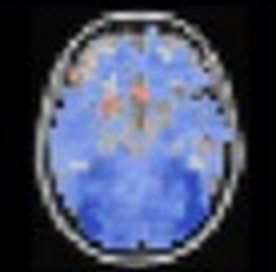
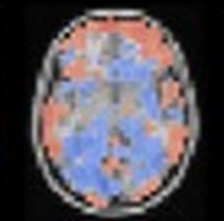

Brainflow
Viewer
Set studio
Files
Subjects
Search subjects
Order
Montage
ID
Filter
Same order as the montage: source order
Subject
group
sex
{{ r.id }}
{{ r.group }}
{{ r.sex }}
Groups
none saved
enc_rep_rsa
Ready to compare
35 subjects
Image
same_item
Population
Deck
Compare
Summary
Montage
Background
MNI152 T1
Show
Mean
Group
None
Slice
Axial
z [value] mm
Cutouts
Zoom
1×
Group mean · 35 subjects

L
R
sub-1012
Map
Difference from mean

L
R
At the pinned point
montage order · cutout width set in Values
1–10 of 35
{{ c.label }}
sub-1012 · 4 of 35
Group mean of 35 beside sub-1012 · pinned at ([x], [y], [z]) mm
One scale for every map
[−limit]
[limit]
Fit
Values
Plot
Clusters
Activity
Log
At
Point
([x], [y], [z]) mm
Radius
[r] mm
Cutout
[w] mm
Unpin
Follow hover
Strip
Table
Mean
[value]
Finite · unavailable
[n] · [n]
Positive share
[value]%
Mean absolute
[value]
Cancellation
[value]
Near zero below
[limit]
Inspector
sub-1012
focused subject
Image
maps/same_item/sub-1012
group
older
sex
F
Distance from mean
[value] · [rank] of 35
Value at the pin
[value]
Open in Deck
Hold to preview without
This subject
Nearest subjects
appear once subjects are sorted or grouped by similarity
Selection
none
Select all
Undo selection
Compare and test
choose A and B
Analysis setup
by subject · no mask · correlation
Coverage and sources
35 of 35 available